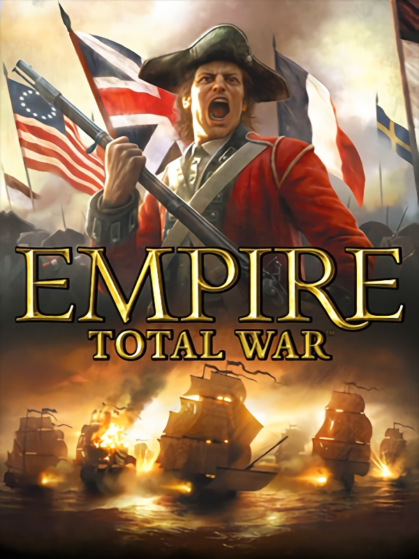

Total War: EMPIRE - Definitive Edition
Total War: EMPIRE - Definitive Edition
Details
|  | |
| Playtime | Not Played |
| Last Activity | Never |
| Added | 02/12/2022 9:35:48 |
| Modified | 17/05/2025 23:44:35 |
| Completion Status | Not Played |
| Library | Steam |
| Source | Steam |
| Platform | PC (Windows) |
| Release Date | 03/03/2009 |
| Community Score | 78 |
| Critic Score | 90 |
| User Score | |
| Genre | Real Time Strategy (RTS) Strategy Tactical Turn-based strategy (TBS) |
| Developer | The Creative Assembly |
| Publisher | Feral Interactive Sega |
| Feature | Co-Operative Multiplayer Single Player |
| Links | Wikia Wikipedia Steam Official Website Twitch Youtube |
| Tag | Action Adventure America Atmospheric Classic Grand Strategy Great Soundtrack Historical Military Multiplayer Naval Real Time Tactics RTS Singleplayer Strategy Tactical Turn-Based Turn-Based Strategy Turn-Based Tactics War |
Description

Complete your Total War collection with this Definitive Edition of Total War: EMPIRE, which includes all DLC and feature updates since the game’s release:
Take on the Warpath Campaign and lead one of 5 new Native American factions in an epic war to defend your lands and drive out the invaders.
Build up your armies with the Elite Units of the East, Elite Units of the West, Elite Units of America and the Special Forces Units & Bonus Content packs, which together add over 50 elite new units.
Total War: EMPIRE Definitive Edition offers hundreds and hundreds of hours of absorbing gameplay and every bit of content made for the game. See below for full details.

About Total War: EMPIRE
Control the land, command the seas, forge a new nation, and conquer the globe.
Total War: EMPIRE takes the Total War franchise to the eighteenth century Age of Enlightenment a time of political upheaval, military advancements, and radical thought, captured in stunning detail.
Total War: EMPIRE introduces a host of revolutionary new features, including true 3D naval combat. For the first time in the Total War series, you will be able to intuitively command single ships or vast fleets upon seascapes rich with extraordinary water and weather effects that play a huge role in your eventual glorious success or ignominious defeat. After pummelling your enemy with cannon fire, close in to grapple their ship and prepare to board, taking control of your men as they fight hand-to-hand on the decks of these wooden behemoths.
In addition, Total War: EMPIRE will see further enhancements to the Total War series’ signature 3D battles and turn-based campaign map. Real-time battles will pose new challenges with the addition of cannon and musket, challenging players to master new formations and tactics as a result of the increasing role of gunpowder within warfare. And the Campaign Map, the heart of Total War introduces a variety of new and upgraded elements, including new systems for Trade, Diplomacy and Espionage with agents; a refined and streamlined UI; improved Advisors; and a vastly extended scope, taking in the riches of India, the turbulence of Europe and, for the first time, the untapped potential of the United States of America.
About The Warpath Campaign
A new detailed North American Campaign Map expands the Total War: EMPIRE experience, with 5 brand new Native American factions, new units and technologies.
Experience battles in the new Warpath Campaign and lead one of the 5 new factions in an epic war to defend your lands and drive out the invaders. Or take these units and their unique strengths into multiplayer battles.
• 5 New Playable Factions including the Iroquois, Huron, Plains, Pueblo and Cherokee nations.
• Expanded North American Territories - A new, more detailed North American Campaign Map featuring new regions and a new start date.
• New Elite Units including Mohawk Elite Warriors, Cheyenne Dog Soldiers, Navajo Scout Warriors and many more.
• Two New Agent Types - Infiltrate enemy territory with the new Shaman unit and sabotage the opposition with the cunning Scout.
• 18 New Tribal Technologies including Spirit Medicine, the Call of the Wild and Dreamwalking creating a brand new tribal technology tree.
• New Winning Objectives for each of the playable factions.
About Elite Units of the East
The Elite Units of the East adds 12 new elite units to the Maratha and Ottoman factions and expands the map further East than any previous Total War game.
Most of these soldiers' expertise developed on the battlefield - some are fearsome brigands, others of them are drawn from a strong academic background, learned warriors.
They will provide a vast array of tactical options: intimidating and cowing your enemies.
• Haydut Irregulars (Ottoman Empire)
• Wallachian Boyars (Ottoman Empire)
• Bosnian Panduks (Ottoman Empire)
• Circassian Armoured Cavalry (Ottoman Empire)
• Armenian Archers (Ottoman Empire)
• Libyan Kuloglu (Ottoman Empire)
• Palestinian Auxiliaries (Ottoman Empire)
• Cairo Janissaries (Ottoman Empire)
• Mounted Nizam-I-Cedit (Ottoman Empire)
• Rajput Zamindars (Maratha)
• Poligars (Maratha)
• Barawardi (Maratha)
About Elite Units of the West
The Elite Units of the West introduces 14 completely unique units from all the major Western factions. Featuring all new infantry and cavalry units, equipped with the best weapons and having undergone the most rigorous of training, the Elite Units of the West bring even more options on the battlefield to all tacticians seeking to defeat their enemies.
• Hungarian Grenadiers (Austria)
• Horse Guards (Britain)
• Swiss Guards (France)
• Blue Guards (United Provinces)
• Gardes du Corps (United Provinces)
• Guard Grenadiers (Poland-Lithuania)
• 2nd Hussars (Prussia)
• Bosniaks (Prussia)
• Frei-Korps (Prussia)
• Gardes à cheval (Russia)
• Siemenovski Foot Guards (Russia)
• Walloon Guards (Spain)
• Legion of the United States (United States)
• US Marines (United States)
About Elite Units of America
The Elite Units of America adds 15 new elite units to the American, British and French factions of Total War: EMPIRE. In the last half of the 18th century, the political upheaval from thirteen of British Colonies in North America ultimately led to the 1776 Declaration of Independence and changed History forever. The 15 units have all played a major part in the American Revolution. Though their background owes a lot to European military traditions, their identity is tied to the destiny of the United States and gave these men courage and audacity like no other soldier on the battlefield.
• 1st Delaware (United States)
• 1st Maryland (United States)
• 2nd Continental Light Dragoons (United States)
• 2nd New York (United States)
• 33rd Foot (Britain)
• Brunswick Dragoons (Britain)
• Hessian Grenadiers (Britain)
• King’s Royal Regiment of New York (Britain)
• Lee’s Legion (United States)
• Morgan’s Provisional Rifle Corp (United States)
• Pulaski’s Legion (United States)
• Royal Deux-Ponts Regiment (France)
• Royal Welch Fusiliers (Britain)
• Company of Select Marksmen/Fraser’s Rangers (Britain)
• Tarleton’s Light Dragoons (Britain)
About Special Forces Units & Bonus Content
The Special Forces Units introduces six of the most influential military forces of the 18th Century. True to the period, these exclusive elite units become available on the campaign map via a certain faction or once a specific geographical region is under control. This pack also includes three more exclusive Elite Units.
• HMS Victory
• Rogers' Rangers
• Ottoman Organ Gun
• Ghoorkas
• Corso Terrestre Guerillas
• Bulkeley's Regiment
• Death's Head Hussars
• The USS Constitution
• The Dahomey Amazons